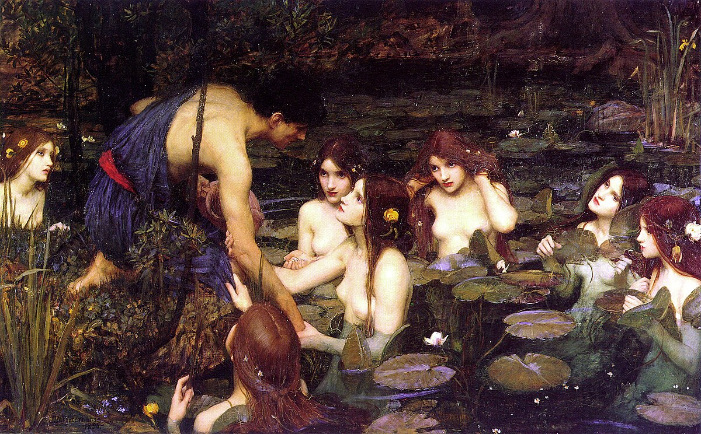

Tijdlijn
Neoclassicisme
Waterhouse zijn vroege werk wordt gekenmerkt door neoclassicistische invloeden. Het neoclassicisme, dat halverwege de 18e eeuw ontstond, was geïnspireerd door de kunst en verhalen van het oude Griekenland. Waterhouse zijn vroege schilderijen, zoals zijn werk "Sleep and His Half-Brother Death" uit 1874, hebben de strakke lijnen en een rustige compositie die kenmerkend zijn voor het neoclassicisme.
Waterhouse zijn tijd aan de Royal Academy Schools, waar hij van 1870 tot 1874 studeerde, heeft waarschijnlijk bijgedragen aan zijn neoclassicistische stijl. De Academie gaf de voorkeur aan traditionele, historische en mythologische onderwerpen. Deze onderwerpen zijn door zijn hele carrière een belangrijke rol blijven spelen.

Sleep and His Half-Brother Death, oil painting, John William Waterhouse, 1874.
De Prerafaëlieten
Eind jaren 1880 begon Waterhouse meer elementen van de prerafaëlieten in zijn werk over te nemen. De Prerafaëlieten Broederschap, streefde naar een terugkeer naar de gedetailleerde en levendige kunst van de vroege Renaissance, vóór de tijd van kunstenaar Rafaël. Waterhouse voelde zich vooral aangetrokken tot de nadruk die de beweging legde op kleur en detail, en tot hun fascinatie voor Arthur legendes en poëzie.
Zijn schilderij "The Lady of Shalott" uit 1888, gebaseerd op het gedicht van Alfred Lord Tennyson (een grote inspiratiebron van de prerafaëlieten), is een goed voorbeeld van Waterhouse zijn verschuiving naar deze kunststroming. Het schilderij toont de intense kleuren, complexe details en emotionele diepgang die kenmerkend zijn voor de prerafaëlitische kunst.

The Lady of Shalott, oil painting, John William Waterhouse, 1888.
Fusie Van De Twee Stijlen
Waterhouse zijn latere werk heeft een unieke fusie van neoclassicisme en prerafaëlisme. Zijn gebruik van mythologische en literaire thema's, samen met zijn focus op vrouwelijke personages, weerspiegelt de invloed van beide stromingen. Deze mix van stijlen zie je terug in Waterhouse zijn meest iconische werken, waaronder "Hylas and the Nymphs, 1896” en "Echo and Narcissus, 1903” (afbeelding bovenaan de pagina).
Zo laat het schilderij "Hylas and the Nymphs" de sensuele aantrekkingskracht zien van de nimfen en het tragische lot van Hylas. De prerafaëlitische fascinatie voor schoonheid, liefde en dood zie je dan mooi terugkomen. Aan de andere kant zijn het mythologische thema en de zorgvuldige compositie van het schilderij te herkennen aan Waterhouse zijn neoclassicistische invloeden.

Hylas and the Nymphs, oil painting, John William Waterhouse, 1896.